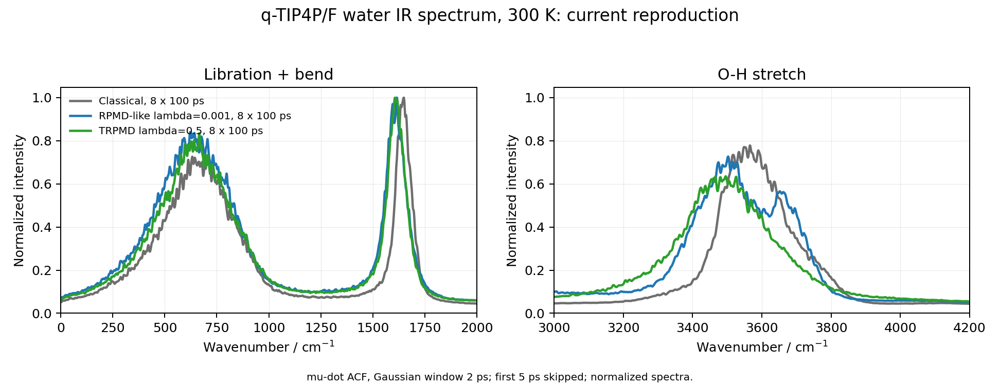
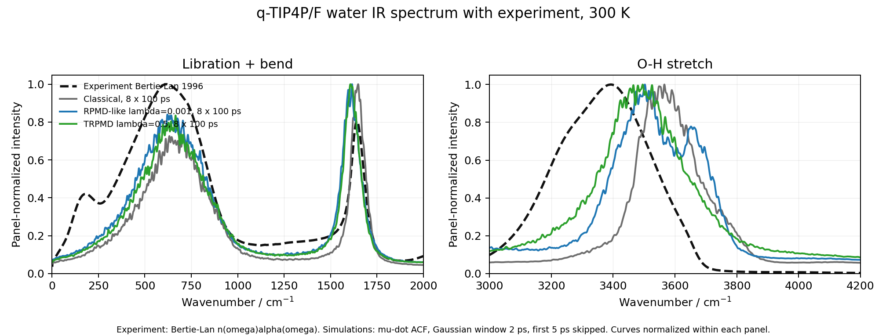

Molecular Dynamics
TRPMD Water IR Spectrum with q-TIP4P/F
This note records a full q-TIP4P/F reproduction workflow for the liquid-water infrared spectrum comparison in Fig. 7 of Rossi, Ceriotti, and Manolopoulos. The goal was not to rebuild every curve in the paper: I deliberately skipped CMD and focused on the three curves needed to understand the resonance problem, namely classical MD, weakly thermostatted RPMD-like dynamics, and optimally damped TRPMD. The final calculation used 216 water molecules, 32 beads for the path-integral runs, eight independent 100 ps trajectories per method, and a dipole-derivative autocorrelation analysis.
Target
The reference paper introduced thermostatted ring polymer molecular dynamics (TRPMD) as a minimal modification of RPMD for vibrational spectroscopy. Standard RPMD keeps the path-integral bead masses equal to the physical particle masses and propagates the extended ring-polymer dynamics without damping. This works surprisingly well for many low-frequency and rate observables, but it can fail in vibrational spectra because the artificial internal modes of the ring polymer remain active dynamical variables. When one of those internal-mode frequencies is close to a physical vibration, the spectrum can develop nonphysical peak splitting or shoulders.
Fig. 7 of the TRPMD paper applies this idea to the q-TIP4P/F water model at 300 K. In the low-frequency libration and bending region, the path-integral methods are broadly similar. In the O-H stretching region, RPMD shows visible resonance artifacts, while optimally damped TRPMD washes those artifacts into a smoother single band. The original paper also includes CMD, but I left it out of this reproduction so that the comparison remains concentrated on the RPMD to TRPMD change.
The final production target was:
q-TIP4P/F Model
The q-TIP4P/F model is a flexible, fixed-charge water model designed for quantum simulations of liquid water. It keeps the TIP4P idea of placing the negative charge on a massless M site rather than directly on the oxygen, but the intramolecular O-H distances and H-O-H angle are flexible. In the i-PI driver used here, the relevant parameters are hard-coded in the local Fortran source:
<IPI_SOURCE_ROOT>/drivers/f90/pes/qtip4pf.f90The dipole was taken consistently with the q-TIP4P/F charge geometry. For each molecule,
This is simpler than the TTM3-F dipole used in the earlier RPMD/CMD water spectrum paper, because q-TIP4P/F is not polarizable. That limitation matters for intensities, especially in the O-H stretching band, but it is sufficient for testing the RPMD resonance artifact and its TRPMD suppression.
TRPMD Thermostat
The ring-polymer spring Hamiltonian for one Cartesian coordinate contains
A discrete normal-mode transform diagonalizes this spring term and gives the free internal-mode frequencies
The PILE thermostat uses a mode-dependent Langevin friction. Critical damping for a free harmonic mode is
TRPMD uses a scaled family of frictions,
In this reproduction I used the paper's default optimally damped choice, \(\lambda=0.5\), for TRPMD. To make an RPMD-like comparison in the same i-PI thermostat framework, I used \(\lambda=0.001\). The centroid thermostat time was set to an effectively infinite value so that the centroid was not appreciably thermostatted during the correlation dynamics:
<thermostat mode="pile_l">
<tau units="femtosecond">1.0e9</tau>
<pile_lambda>0.5</pile_lambda>
</thermostat>At \(P=32\) and \(T=300\ \mathrm K\), the first few free internal-mode frequencies are:
The O-H stretching band of water lies near \(3400\) to \(3700\ \mathrm{cm^{-1}}\), so the closest free ring-polymer mode is \(k=3\), together with its degenerate partner \(P-k=29\). This does not mean that a fake peak must appear exactly at \(3874\ \mathrm{cm^{-1}}\). The spectrum sees physical coordinates and the total dipole, not an isolated free bead spring. A more useful local model is a pair of coupled modes:
The coupling shifts the observed positions and redistributes intensity. What one sees in an RPMD spectrum is therefore a shoulder, split band, or distorted high-frequency profile, not necessarily a narrow spike at the bare internal-mode frequency. TRPMD suppresses the artifact by damping the non-centroid internal modes. For \(k=3\), \(\lambda=0.5\) damps on a femtosecond timescale, while \(\lambda=0.001\) leaves the mode close to ordinary RPMD behavior.
Spectrum Estimator
The infrared absorption signal is usually written in terms of the Kubo-transformed total-dipole autocorrelation:
For the numerical analysis, I used the dipole-derivative route:
provided the finite-time boundary terms are negligible. The practical advantage is that differentiating the dipole removes constant offsets and strongly reduces the artificial high-frequency baseline drift that can appear when a noisy finite-trajectory dipole ACF is multiplied by \(\omega^2\). The centered finite difference used in the script was
after bead averaging and skipping the first 5 ps of every production trajectory. I then computed FFT autocorrelations, averaged over independent trajectories, applied a 2 ps Gaussian time window, Fourier transformed, and normalized the spectra. The figures below should therefore be read as normalized spectral-shape comparisons, not as a final absolute-intensity calculation with a fully validated prefactor.
Execution
The calculation was staged on the remote cluster under
<TRPMD_WORKDIR>using the conda environment
<CONDA_ENV_ROOT>/deepmdThe q-TIP4P/F Fortran driver was copied from the local i-PI tree and compiled on the login node. All dynamics were submitted as Slurm jobs on compute nodes. The production ladder was:
- Compile and test the q-TIP4P/F Fortran driver.
- Run a 1-bead 20-step classical smoke test.
- Run a 32-bead 100-step TRPMD smoke test with \(\lambda=0.5\).
- Run 1 ps pilot trajectories for classical MD, TRPMD, and RPMD-like dynamics.
- Submit 8 independent 100 ps production trajectories for each method.
- Parse bead dipoles, average over beads, compute \(C_{\dot\mu\dot\mu}(t)\), and plot spectra.
A small but important implementation detail was the i-PI output naming. The dipole trajectories were written as simulation.dip_0 for the 1-bead classical run and as simulation.dip_00 to simulation.dip_31 for 32-bead runs. The first version of my analysis script looked for dip_*, so it would have skipped the data. The final script explicitly matches simulation.dip*.
Production Diagnostics
All 24 production jobs completed normally. The eight classical trajectories each took about 70 minutes. The 32-bead TRPMD and RPMD-like trajectories each took about 3.2 to 3.7 hours. No nonempty Slurm error logs were found in the final check.
The stability of the TRPMD and RPMD-like temperatures is a useful sanity check that the large centroid thermostat time did not leave the extended dynamics in an obviously drifting state. It does not prove that the spectrum is exact, but it does show that the production trajectories were thermally well behaved.
Result
The final normalized spectra are shown first without experiment. The key qualitative result is already visible: the RPMD-like curve shows a more structured O-H stretch band, with a shoulder on the high-frequency side, while TRPMD gives a smoother and broader single band. This is the resonance artifact discussed in the paper.

Adding the experimental curve makes the systematic high-frequency shift clearer. The experimental reference was taken from the liquid-water data of Bertie and Lan. I read the real and imaginary refractive indices, \(n\) and \(k\), from the distributed water.zip files and converted them to
where \(\tilde\nu\) is the wavenumber in \(\mathrm{cm^{-1}}\). Because the simulation curves are not yet on an absolute prefactor scale, the following figure normalizes each panel separately. This makes it suitable for comparing peak positions and shapes, not absolute band intensities.

The peak positions from the final analysis are:
The TRPMD stretch band is therefore red shifted by about \(70\ \mathrm{cm^{-1}}\) relative to classical MD, in close agreement with the statement in the TRPMD paper that the TRPMD peak is red shifted from the classical peak by roughly \(75\ \mathrm{cm^{-1}}\). It is still blue shifted from the experimental maximum by about \(100\ \mathrm{cm^{-1}}\). This is not surprising: the curve that lies closest to experiment in the original paper is CMD, and q-TIP4P/F was parameterized using a partially adiabatic CMD approximation. Since I did not run CMD here, the residual blue shift is expected rather than a sign of a failed TRPMD reproduction.
Interpreting the Resonance
The RPMD-like high-frequency shoulder should not be interpreted as a new physical water vibration. It is better understood as a resonance channel between a physical stretching coordinate and an artificial ring-polymer internal mode. At 300 K with 32 beads, the \(k=3\) internal mode lies near \(3874\ \mathrm{cm^{-1}}\), close enough to the O-H stretching region to perturb it. In the coupled-mode picture, the observed peaks are shifted away from both the bare physical stretch and the bare free internal-mode frequency.
This distinction matters. If a free ring-polymer mode is at \(3874\ \mathrm{cm^{-1}}\), the fake feature in the absorption spectrum does not have to appear exactly at \(3874\ \mathrm{cm^{-1}}\). The total dipole projects onto physical molecular coordinates, the local O-H stretch is anharmonic, and the liquid environment couples the stretch to librations and hydrogen-bond fluctuations. The internal mode therefore distorts the physical band, producing a shoulder or split peak around the stretch region. TRPMD removes the distortion by damping the non-centroid modes without adiabatically separating them as CMD does.
This is exactly the point of TRPMD in vibrational spectroscopy: it is not a peak-fitting device that forces the result onto experiment. It is a controlled way to keep the bead masses physical while removing a known RPMD artifact.
What Was Reproduced and What Was Not
The reproduction is successful at the level I intended:
- The q-TIP4P/F i-PI driver was used directly rather than substituting a different water potential.
- The production size matches the Fig. 7 protocol: 216 waters, 32 beads, 0.25 fs timestep, and 8 independent 100 ps trajectories for the RPMD-like and TRPMD comparison.
- The PILE friction parameter follows the TRPMD rule \(\gamma_k=2\lambda\tilde\omega_k\), with \(\lambda=0.5\) for TRPMD and \(\lambda=0.001\) for the RPMD-like comparison.
- The RPMD-like curve retains a structured O-H stretch band, while TRPMD gives a smoother single band.
- The classical to TRPMD high-frequency red shift is about \(70\ \mathrm{cm^{-1}}\), consistent with the original paper's discussion.
There are also clear limitations:
- I did not run CMD, so the figure is not a complete reproduction of every curve in Fig. 7.
- The plotted simulation spectra are normalized shape spectra from \(C_{\dot\mu\dot\mu}(t)\), not final absolute \(n(\omega)\alpha(\omega)\) spectra with a fully checked SI prefactor.
- The q-TIP4P/F fixed-charge dipole omits induced-dipole contributions, so absolute stretching intensities should not be overinterpreted.
- The experimental curve is plotted from the Bertie-Lan \(n,k\) data and normalized for shape comparison; it is not used to rescale the simulation intensities.
Reproducibility Notes
The compact scripts and templates below are the published record of the calculation. The actual trajectory files are much too large to publish with the website, but the analysis scripts are the same ones used to parse bead dipoles and generate the figures in this note.
input-trpmd-lambda-0p5.template.xml- i-PI production template for optimally damped TRPMD.input-rpmd-lambda-0p001.template.xml- i-PI production template for the weakly damped RPMD-like comparison.run-qtip4pf-trpmd.slurm- representative Slurm wrapper launching i-PI and 32 q-TIP4P/F force clients.render_input.py- replaces the socket placeholder in the i-PI XML template.parse_qtip4pf_dipoles.py- readssimulation.dip_*extras files and writes bead-averaged dipole CSV files.analyze_method.py- runs the parser and spectrum analysis over all trajectories of one method.compute_ir_spectrum_mudot.py- computes the dipole-derivative ACF spectrum, optional block estimates, and plots.experiment_nalpha_bertie_lan_1996.csv- processed experimental \(n(\omega)\alpha(\omega)\) curve from the Bertie-Lan water data.
The final analysis commands were:
python scripts/analyze_method.py production/classical_md \
analysis/classical_md --dt-fs 1.0 --skip-ps 5.0 \
--max-cm 4200 --window gaussian --window-width-ps 2.0 \
--block-size 2
python scripts/analyze_method.py production/trpmd_lambda_0p5 \
analysis/trpmd_lambda_0p5 --dt-fs 1.0 --skip-ps 5.0 \
--max-cm 4200 --window gaussian --window-width-ps 2.0 \
--block-size 2
python scripts/analyze_method.py production/rpmd_lambda_0p001 \
analysis/rpmd_lambda_0p001 --dt-fs 1.0 --skip-ps 5.0 \
--max-cm 4200 --window gaussian --window-width-ps 2.0 \
--block-size 2Takeaways
- For q-TIP4P/F water, the RPMD resonance problem is visible in the O-H stretch band even after averaging eight 100 ps trajectories.
- The most relevant free ring-polymer mode at 300 K and 32 beads is \(k=3\), near \(3874\ \mathrm{cm^{-1}}\), but the observed artifact is a shifted shoulder or split band rather than a peak fixed exactly at that frequency.
- TRPMD with \(\lambda=0.5\) suppresses the spurious RPMD structure while preserving a physically plausible quantum red shift from classical MD.
- The remaining blue shift from experiment is expected for this comparison because CMD was omitted and q-TIP4P/F was originally tuned in a partially adiabatic CMD context.
- The dipole-derivative ACF is a robust practical estimator for these finite trajectories because it avoids the high-frequency baseline drift seen in the direct dipole-ACF route.
References
- M. Rossi, M. Ceriotti, and D. E. Manolopoulos, "How to remove the spurious resonances from ring polymer molecular dynamics," J. Chem. Phys. 140, 234116 (2014). DOI: 10.1063/1.4883861.
- S. Habershon, T. E. Markland, and D. E. Manolopoulos, "Competing quantum effects in the dynamics of a flexible water model," J. Chem. Phys. 131, 024501 (2009). DOI: 10.1063/1.3167790.
- J. E. Bertie and Z. Lan, "Infrared intensities of liquids XX: The intensity of the OH stretching band of liquid water revisited, and the best current values of the optical constants of H2O(l) at 25 C between 15,000 and 1 cm-1," Applied Spectroscopy 50, 1047-1057 (1996). DOI: 10.1366/0003702963905385.
- S. Habershon, G. S. Fanourgakis, and D. E. Manolopoulos, "Comparison of path integral molecular dynamics methods for the infrared absorption spectrum of liquid water," J. Chem. Phys. 129, 074501 (2008). DOI: 10.1063/1.2968555.